はじめての Launchs
GitHub リポジトリからアプリをデプロイ・管理するサービス Launchs の使い方を、 スクリーンショット付きでステップごとに解説します。
Launchs とは
Launchs は、GitHub リポジトリに push されたコードを数クリックで本番環境にデプロイできる クラウドプラットフォームです。インフラの知識がなくても、アプリの起動・公開・管理がブラウザ上で完結します。
アプリは 「プロジェクト」 という単位で管理されます。プロジェクトの中に 「コンテナ」 を追加すると、GitHub からコードが自動取得されてビルド・起動されます。 複数のコンテナを同じプロジェクトにまとめることで、フロントエンド・バックエンド・DB を一元管理できます。
プロジェクト
アプリをまとめる単位。複数コンテナをひとつのプロジェクトで管理。
コンテナ
GitHub リポジトリと紐づいたデプロイ単位。Railpackを用いて自動ビルド。
Ingress
コンテナに外部 URL を発行。HTTPS で即座にアプリを公開できる。
ビルドログ
ビルド・実行のログをリアルタイムで確認。エラーの原因を素早く特定。
プロジェクトを作成する
Launchs にログイン後、最初は空のプロジェクト一覧が表示されます。 右上の 「+ 新規プロジェクト」 ボタンからプロジェクトを作成しましょう。
- 画面右上の 「+ 新規プロジェクト」 ボタンをクリックする
- ダイアログが開いたら、プロジェクト名 を入力する
- 「プロジェクトを作成」 ボタンをクリックして確定する
- 一覧にカードが追加され、ステータスが 「稼働中」 になるのを確認する
- カードをクリックしてプロジェクト詳細に移動する
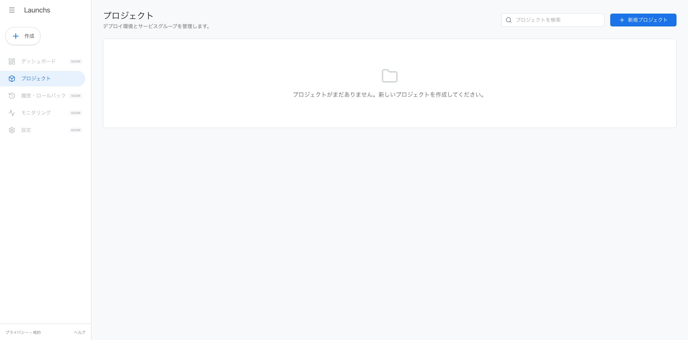
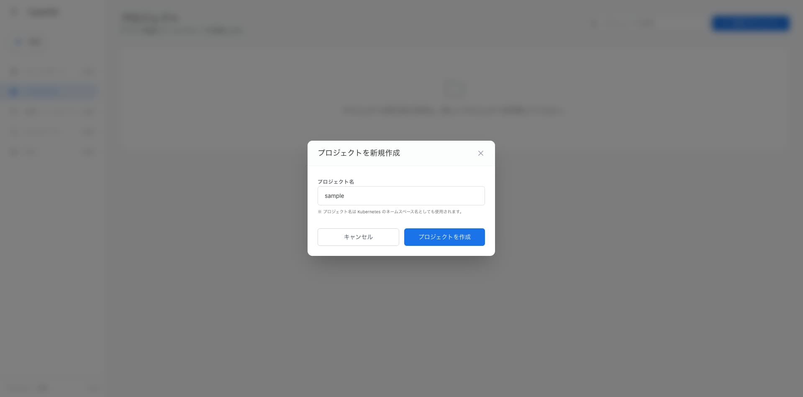
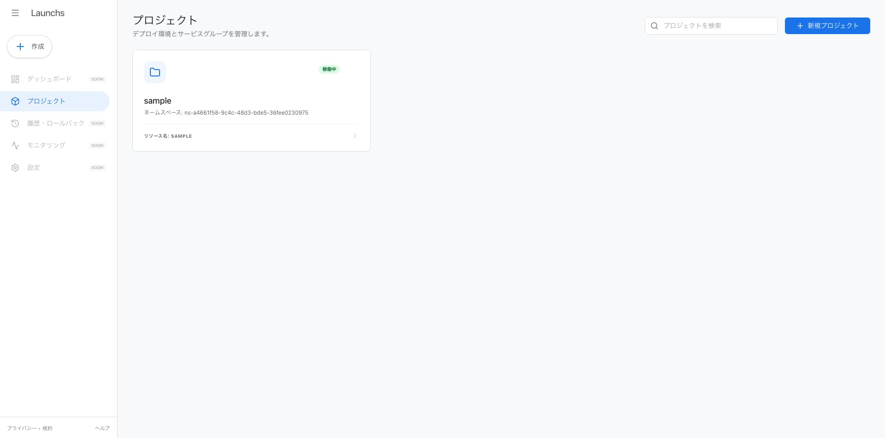
コンテナを追加する（アプリをデプロイする）
プロジェクト詳細画面でコンテナを追加します。コンテナとは、GitHub リポジトリと紐づいた デプロイの単位です。GitHub URL・ブランチ・ディレクトリ を指定するだけで 自動的にビルドが始まります。
- プロジェクト詳細画面の 「+ コンテナを追加」 ボタンをクリックする
- コンテナ名 を入力する（例：
go-sample-app） - GitHub リポジトリ URL を入力する（例：
https://github.com/launchs-org/sample-go-app） - デプロイしたい ブランチ名 を入力する（例：
main） - Dockerfile がある ディレクトリ を指定する（ルートの場合は
.） - 「デプロイを開始する」 ボタンをクリックする
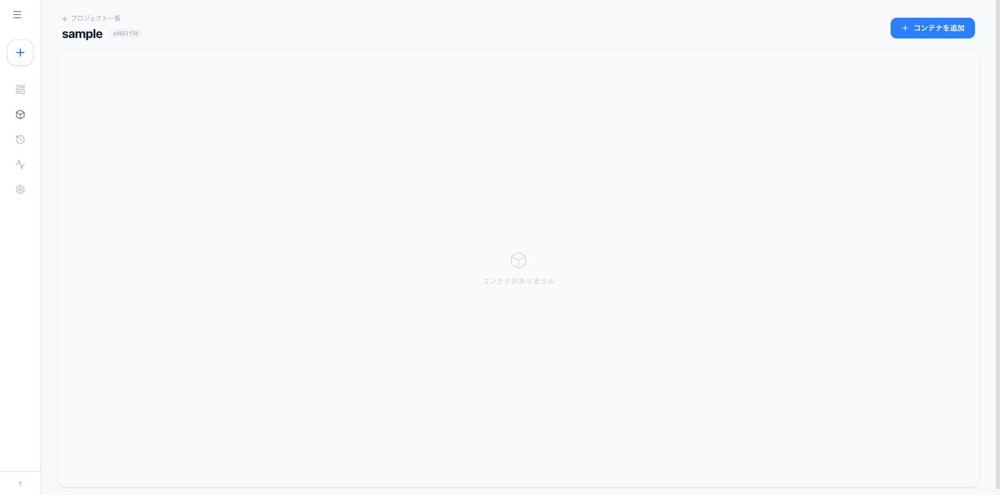
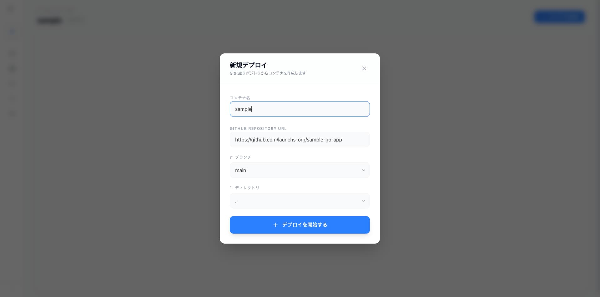
Dockerfile が存在しないとビルドに失敗します。
あらかじめリポジトリに Dockerfile をコミットしておいてください。
ビルドの進行を確認する
「デプロイを開始する」をクリックすると、プロジェクト詳細のフロー図に新しいコンテナカードが出現し、 「ビルド中」 バッジが表示されます。ビルドには数秒〜数分かかります。
サイドパネルの 「ビルド」タブ を開くと、ビルドログがリアルタイムで流れてきます。 エラーが発生した場合はここで原因を確認できます。
- フロー図にコンテナカードが追加され 「ビルド中」 バッジが表示されるのを確認する
- コンテナカードをクリックして右サイドパネルを開く
- 「ビルド」タブ を選択してビルドログを確認する
- ログの末尾に
ビルド成功のような成功メッセージが出れば完了
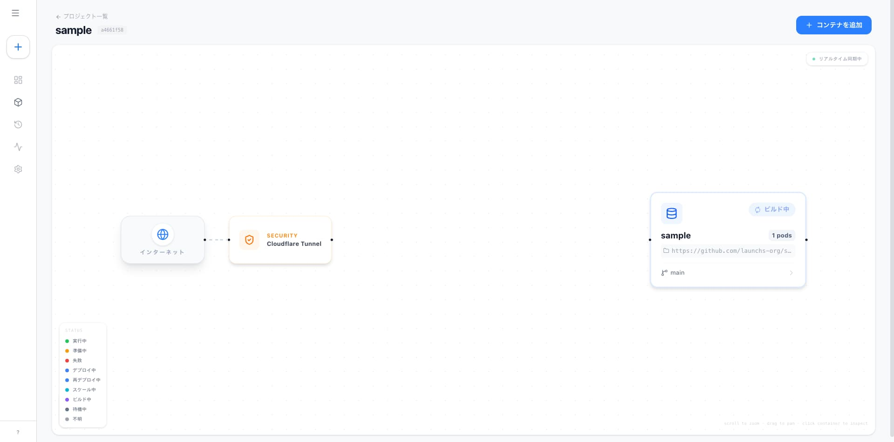
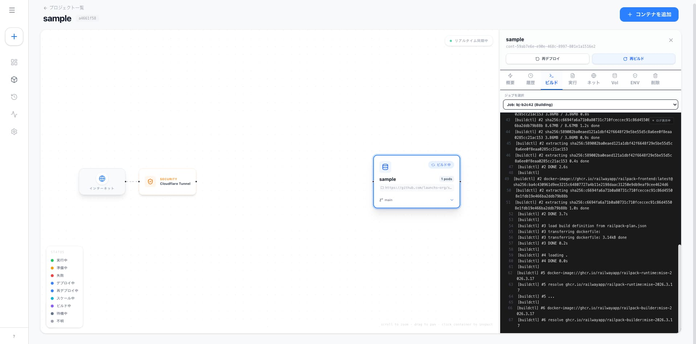
アプリの起動を確認する
ビルドが成功するとコンテナが自動的に起動し、フロー図のカードが 「実行中」 に変わります。 サイドパネルの 「実行」タブ ではアプリのリアルタイムログを確認できます。
- フロー図のカードのバッジが 「実行中」 に変わるのを確認する
- サイドパネルで 「実行」タブ を選択する
- アプリのログ出力が流れていることを確認する（例：
Listening on port 1323）
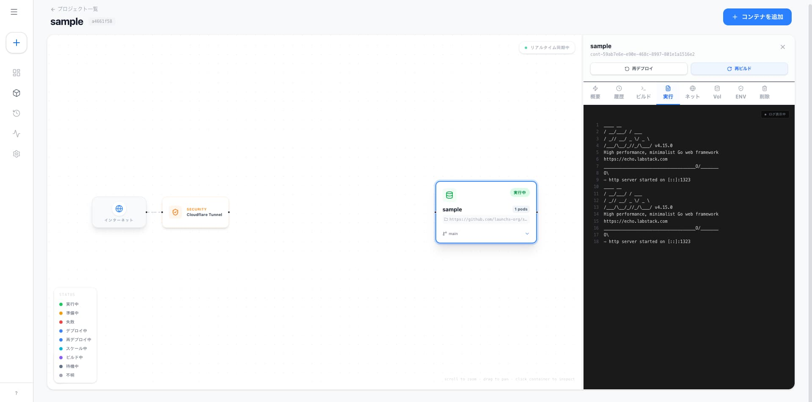
アプリをインターネットに公開する
デフォルトではコンテナはサービスを用いた内部ネットワーク内のみでアクセス可能です。 「ネット」タブ の Ingress 設定を有効にすると、HTTPS の外部 URLが発行され、 インターネットからアクセスできるようになります。
- サイドパネルで 「ネット」タブ を選択する
- 内部ポート設定 にアプリが LISTEN しているポート番号を入力する（例：
1323） - 外部公開 のトグルをオンにする
- 数秒後に DEFAULT DOMAIN の URL が発行される
- 発行された URL をブラウザで開き、アプリが表示されることを確認する
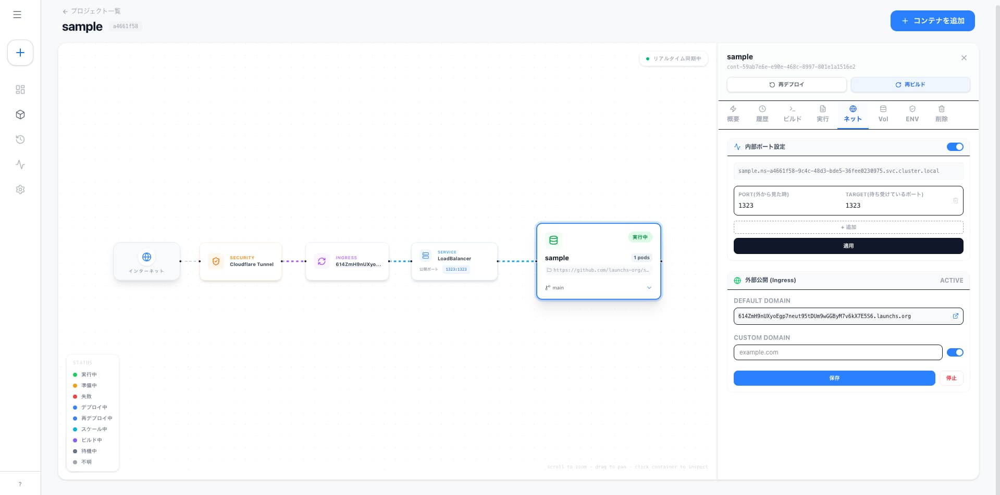
https:// の HTTPS 接続です。
独自ドメインを割り当てたい場合はカスタムドメイン設定を利用してください。
Listening on port <number> のようなメッセージを確認し、
内部ポート設定と一致しているか確かめてください。
コンテナを削除する
不要になったコンテナは 「削除」タブ から削除できます。 誤削除を防ぐため、コンテナ名を入力しないと削除ボタンが有効になりません。
- 削除したいコンテナカードをクリックしてサイドパネルを開く
- 「削除」タブ を選択する
- 確認欄に コンテナ名 を正確に入力する
- 削除ボタンが有効化されたら 「削除する」 をクリックする
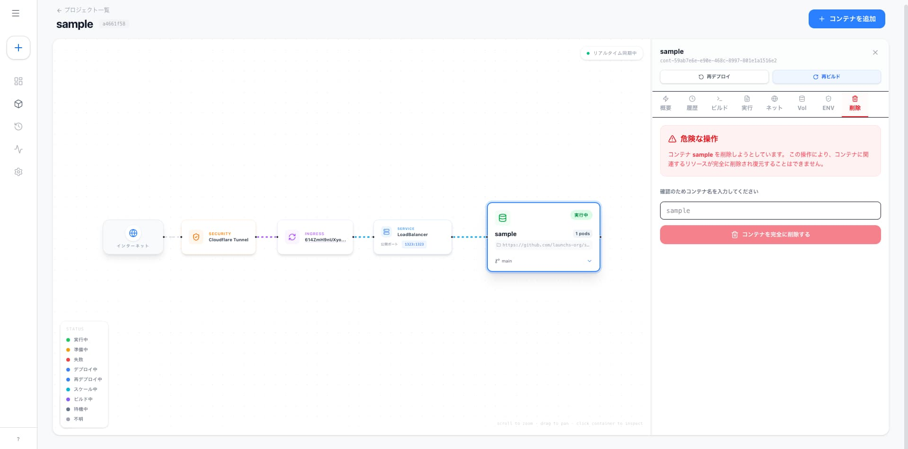
プロジェクトを削除する
プロジェクトが不要になった場合は、プロジェクト一覧から削除できます。 プロジェクトを削除するには、先に 中のコンテナをすべて削除 しておく必要があります。
- 左メニューの 「プロジェクト」 をクリックしてプロジェクト一覧に移動する
- 削除したいプロジェクトのカードに マウスを乗せる
- 右上に表示される 「…」ボタン をクリックする
- メニューから 「プロジェクトを削除」 を選択する
- 確認ダイアログが表示されるので 「OK」 をクリックして確定する
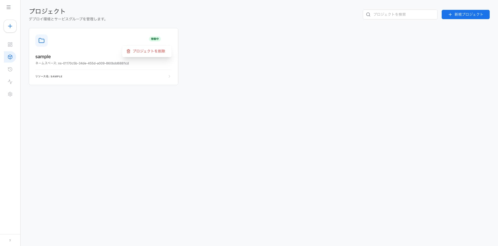